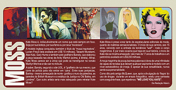

Kate Moss é, indiscutivelmente um nome que está sempre em foco. Seja por sua beleza, por sua fama ou por seus "excessos".
A modelo inglesa conquistou também o título de "musa inspiradora". Lucien Freud (tela avaliada em US# 10 milhões), Takashi Murakami, Alex Katz, Gary Hume e também pelo grafiteiro Bansky, que elaborou a peça baseada nas obras de Andy Warhol (acima, à direita). Afinal, Kate Moss parece ser a única que pode se transfigurar na versão Marilyn Monroe e não cair no ridículo.
A saber, Bansky, segundo o site UOL, é "grafiteiro de rua mesmo, que corre da polícia para não entrar em 'cana'. Entre suas peripécias, Bansky - mesmo ameaçado de morte - grafitou o muro da palestina, as paredes do British Museum e a estátua da Justiça no Old Bailey, em Londres". Que outro artista seria mais adequado para retratar Kate Moss?
Kate Moss é presa voraz tanto de espetaculares editoriais de moda, quanto de matérias sensacionalistas. O início de sua carreira, aos 15 anos, coincide com a entrada da tendência "waif" - rosto e corpo magérrimos. E por mais cocaína que haja em sua história, o trono de Kate não se mostra ameaçado: são mais de 17 anos de trabalhos e um patrimônio avaliado em US$ 200 milhões.
A moça magérrima de pouquíssimas palavras é dona de uma infinidade de capas de revistas que deixam qualquer aspirante à modelo com um nível estratosférico de inveja. E apesar de sua versatilidade, nunca perde sua personalidade.
Como dito pelo amigo McQueen, que, após a divulgação do 'flagra' do uso de droga durante um ensaio fotográfico, vestiu uma camiseta com a seguinte frase, que repetimos: "WE LOVE YOU, KATE".